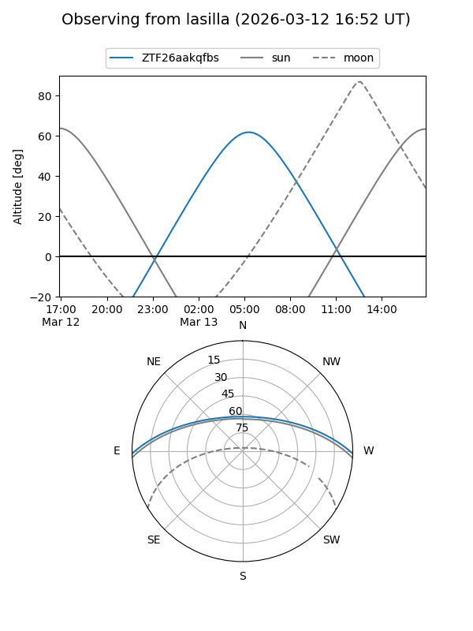
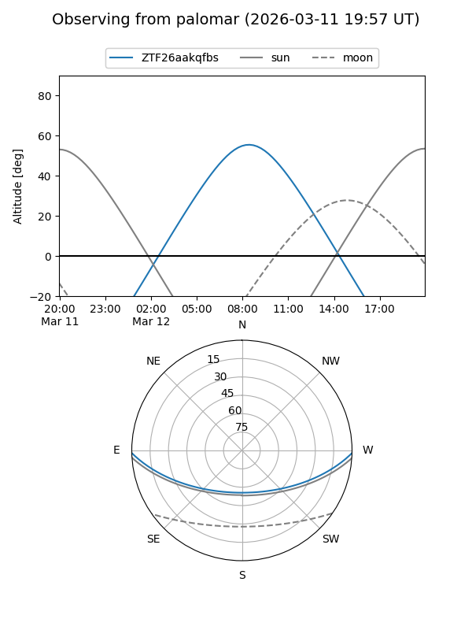

ZTF26aakqfbs
Target ZTF26aakqfbs at 2026-03-12 09:11
Aliases and brokers:
FINK: link
Lasair: link
ALeRCE: link
alt names
ZTF26aakqfbs (ztf,fink_ztf)
Coordinates:
equatorial (ra, dec) = 179.0940,-0.98397
equatorial (HMS+DMS) = 11:56:22.55,-00:59:02.29
galactic (l, b) = (275.4871,+58.92226)
Flags:
Photometry:
last ztfg=19.86
1 ztfg detections
Lightcurve
Visibility


Additional plots